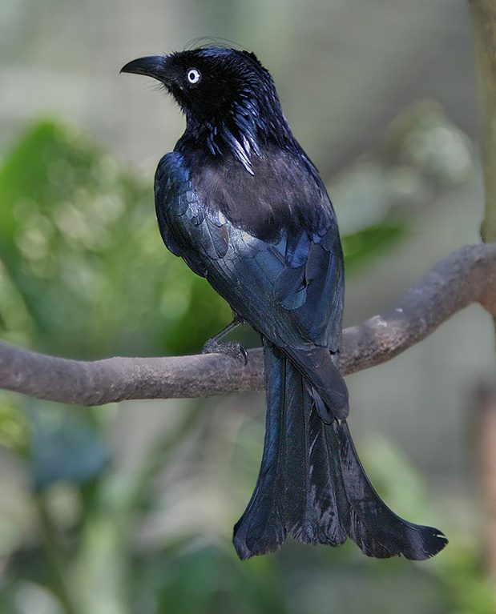

बालदार कोतवालHair-crested Drongo
Dicrurus hottentottus · Dicruridae · BRD-0272

- Scientific name वैज्ञानिक नाम
- Dicrurus hottentottus (Linnaeus, 1766)
- Family कुल
- Dicruridae
- Hindi हिंदी
- बालदार कोतवाल
- Local names स्थानीय नाम
- hair-crested drongo, spangled drongo, keshyukt bhujang
- Status here यहाँ की स्थिति
- native
- Movement आवागमन
- Resident, here all year
- Known from कहाँ दर्ज
- Others have published records from the Basti–Ayodhya districts बस्ती–अयोध्या के ज़िलों से दूसरों के प्रकाशित अभिलेख
- IUCN IUCN
- not evaluated
- Review समीक्षा
- not yet reviewed
When to look कब देखें
Present all year. साल भर मौजूद।
Tell it apart from इनसे अलग पहचानें
बालदार कोतवाल / Hair-crested Drongo
Dicrurus hottentottus (Linnaeus, 1766) — Dicruridae
बालदार कोतवाल — नम पर्णपाती वनों, नदी तटीय साल जंगलों और बगीचों में पाया जाने वाला एक विशिष्ट भुजंग, जिसके सिर पर पीछे मुड़े हुए बाल जैसे पंख और पूंछ के बाहरी छोर ऊपर की ओर मुड़े होते हैं।
Quick Identification त्वरित पहचान
| Feature | Description |
|---|---|
| Plumage | Entirely glossy blue-black with iridescent metallic neck and breast spangles |
| Crest | Thin hair-like filaments extending backwards from the forehead over the crown |
| Bill | Distinctive long, downcurved, slender black bill with hooked tip |
| Tail | Outer tail feathers flaring outward and curving upward into prominent scrolls |
| Habit | Canopy dweller visiting flowering trees and making aerial feeding sallies |
Large glossy black drongo characterized by thin, hair-like crest filaments extending backwards from the forehead across the crown, a downcurved bill, and outward and upward curled outer tail feathers. The throat and upper breast are adorned with brilliant metallic blue-green iridescent spangles. In flight, the spoon-like upward twists of the outer rectrices provide an unmistakable silhouette against the forest canopy.
हिंदी: चमकीला काला भुजंग जिसके माथे से पतले बाल जैसे पंख पीछे मुड़ते हैं, चोंच नीचे झुकी होती है और पूंछ के बाहरी सिरे ऊपर की ओर मुड़े होते हैं।
Morphology शारीरिक संरचना
| Feature | Description | Source |
|---|---|---|
| Bill structure | Long, downcurved, slender with arched culmen and pointed hook | Rasmussen & Anderton (2012) |
| Tail shape | Broad tail with outer feathers curved upward and outward | Rasmussen & Anderton (2012) |
| Plumage gloss | Glossy blue-black with iridescent metallic neck and breast spangles | Grimmett et al. (2011) |
The adult plumage is entirely deep velvety black glossed with rich metallic greenish-blue sheen across the mantle, neck, and breast. The head bears a spray of delicate, hair-like plumes arising from the forehead and sweeping back over the crown and nape, often lying flat but clearly visible at close range. The throat and upper breast feathers end in lanceolate, highly refractive metallic spangles. The bill is notably longer, more slender, and more strongly downcurved than that of any other regional drongo. The tail is only moderately forked, but the outer rectrices flare broadly outwards and curve upward at their tips into pronounced scrolls. Iris dark reddish-brown; legs and bill black. Sexes are similar in appearance, though females average marginally smaller.
Vocalisations. Highly vocal with an extraordinary acoustic repertoire consisting of harsh metallic churrs, sharp explosive scolding notes, mellow bell-like chimes, and prolonged musical whistles. It is an exceptional mimic, regularly incorporating fluid imitations of raptor calls, woodpeckers, and babbler scolds into its territorial dawn songs.
हिंदी: शरीर का रंग धात्विक नीले-हरे रंग की चमक वाला गहरा काला होता है। माथे पर पीछे की ओर निकले पतले बाल जैसे पंख होते हैं और पूंछ के बाहरी किनारे ऊपर की ओर मुड़कर सींग जैसी आकृति बनाते हैं।
Behaviour & Ecology व्यवहार एवं पारिस्थितिकी
Unlike the common open-country drongos that perch on exposed wires, this species is strictly arboreal and forest-dwelling, foraging within the middle canopy and subcanopy of well-wooded tracts. It is celebrated for its dual feeding strategy, combining active sallying aerial flycatching with energetic nectar-feeding. During early spring, individuals congregate in flowering trees such as silk-cotton (Bombax ceiba) and flame-of-the-forest (Butea monosperma), plunging their heads deep into floral corollas and emerging dusted with golden pollen. They are pugnacious in defending nectar trees against larger birds including starlings and crows.
हिंदी: यह वन-वासी पक्षी है जो खुले तारों के बजाय पेड़ों की छांव में रहता है। यह हवा में उड़ते कीड़ों को पकड़ता है और वसंत में सेमल और पलाश के फूलों का रस पीता है।
Life Cycle / Phenology जीवन चक्र एवं फेनोलॉजी
The breeding season extends from April to June across northern India. The nest is a tidy, shallow saucer or deep cup woven from fine grass stalks, rootlets, and tendrils, bound externally with abundant cobwebs and suspended like a cradle in a horizontal fork near the tip of an outer tree branch, usually 6 to 12 m above the ground. The clutch typically comprises 3 to 4 eggs (Ali & Ripley 1983). The eggs are pale cream or salmon-pink, speckled and blotched with reddish-brown markings (Ali & Ripley 1983). Both parents participate in nest building, incubation for about 15 to 17 days, and provisioning the nestlings (Ali & Ripley 1983).
हिंदी: प्रजनन काल अप्रैल से जून तक चलता है। पेड़ की शाखाओं के दोराहे पर मकड़ी के जालों और महीन घासों से एक सुंदर झूले जैसा घोंसला बनाया जाता है जिसमें 3 से 4 अंडे दिए जाते हैं।
Diet and Feeding Behaviour आहार एवं भोजन व्यवहार
The diet comprises winged insects and floral nectar. Insect prey includes beetles, moths, cicadas, winged termites, grasshoppers, mantises, and large dragonflies captured by agile sallies launched from high canopy perches. In early spring, floral nectar forms a major component of its daily nutrition, visiting Bombax ceiba, Butea monosperma, and Erythrina blossoms where its specialized long, slender bill facilitates nectar extraction without damaging floral reproductive structures.
हिंदी: यह मुख्य रूप से हवा में उड़ने वाले भृंगों, पतंगों और टिड्डों का शिकार करता है। वसंत ऋतु में सेमल और पलाश के फूलों का मकरंद इसका प्रमुख पोषण बनता है।
Predators / Natural Enemies प्राकृतिक शत्रु एवं शिकारी
Adult drongos are agile fliers that rarely fall prey to predators, though medium-sized forest raptors such as the Shikra (Accipiter badius) and Besra (Accipiter virgatus) occasionally attempt surprise attacks in dense foliage. Nests and eggs are vulnerable to arboreal predators including the Indian rat snake (Ptyas mucosa), monitor lizards (Varanus bengalensis), jungle crows (Corvus culminatus), and treepies (Dendrocitta vagabunda). Drongos vigorously mob potential nest robbers with dive-bombing attacks and raucous screeching calls.
हिंदी: शिकारी पक्षी जैसे शिकरा कभी-कभार वयस्क पक्षियों पर झपट्टा मारते हैं। घोंसलों के अंडों और चूजों को धामन सांप, कौवे और महोख से खतरा रहता है, जिन्हें यह आक्रामक होकर भगाता है।
Agricultural / Human Relevance कृषि एवं मानव उपयोगिता
By consuming vast numbers of defoliating forest caterpillars, wood-boring beetles, and agricultural crop pests along forest edges, it provides natural biological pest regulation. Furthermore, its habitual nectar-foraging makes it an essential pollinator for several ecologically and commercially significant native timber and floral trees, particularly Bombax ceiba and Butea monosperma. It is entirely harmless to agricultural crops.
हिंदी: यह हानिकारक कीटों और इल्लियों को खाकर प्राकृतिक नियंत्रण करता है और सेमल तथा पलाश जैसे उपयोगी पेड़ों के फूलों में परागण कर पारिस्थितिकी तंत्र की मदद करता है।
Expected Locally क्षेत्रीय संभावना
Not a field record. Written from published accounts for eastern Uttar Pradesh. No confirmed local sighting yet — if you have seen it, that is what the atlas needs.
अभी तक स्थानीय पुष्टि नहीं। यह विवरण प्रकाशित स्रोतों से है, किसी अवलोकन से नहीं।
GBIF holds published records from forested tracts of eastern Uttar Pradesh and adjacent foothill forests of the Terai. It is expected in mature forest groves, riverine sal woodland reserves, and extensive wooded plantations across the Ghaghara and Kuwana drainage basins, particularly where old-growth silk-cotton trees are preserved. A confirmed regional record requires a clear diagnostic photograph showing the curved tail tips or forehead hair plumes along with observation date and exact locality.
हिंदी: यह तराई और पूर्वी उत्तर प्रदेश के पुराने वनों और नदी तटीय बागों में संभावित है। पुष्टि के लिए पूंछ के मुड़े छोर या सिर के बाल दर्शाने वाली स्पष्ट तस्वीर आवश्यक है।
Distribution वितरण
Widely distributed across the Himalayas, northeastern India, northern river basins, Western and Eastern Ghats, and throughout Southeast Asia to Indonesia. Within the Gangetic plains, it is predominantly associated with moist deciduous woodland patches, riverine gallery forests, and protected forest corridors.
हिंदी: यह हिमालय की तलहटी, पूर्वोत्तर भारत, पश्चिमी घाट और दक्षिण-पूर्व एशिया में व्यापक रूप से पाया जाता है। गंगा के मैदानों में यह घने जंगलों में मिलता है।
Research Questions शोध प्रश्न
- What proportion of the local diet shifts from insects to floral nectar during the peak blooming period of Bombax ceiba?
- Are populations in eastern Uttar Pradesh year-round sedentary residents or do they exhibit seasonal local movements following flowering phenology?
- How effectively does its floral foraging contribute to cross-pollination and seed set in native forest trees compared to mammalian pollinators?
- What are the primary tree species selected for nesting in human-altered riverine forest edges?
- क्या वसंत ऋतु में सेमल के खिलने पर इसकी स्थानीय संख्या में मौसमी वृद्धि होती है?
- क्या इसके द्वारा किए जाने वाले फूलों के परागण से बीजों की गुणवत्ता पर सकारात्मक प्रभाव पड़ता है?
Similar Species समान प्रजातियाँ
| Similar species | Distinction | Hindi distinction | |
|---|---|---|---|
| Black Drongo \ | Dicrurus macrocercus | Deeply forked tail lacking upturned scroll tips; lacks frontal hair filaments; open country percher | ब्लैक ड्रोंगो की पूंछ गहरी कांटेदार होती है लेकिन छोर ऊपर नहीं मुड़ते; सिर पर बाल नहीं होते |
| Ashy Drongo \ | Dicrurus leucophaeus | Slaty-grey plumage without glossy metallic spangles; crimson iris; deeply forked tail | ऐशी ड्रोंगो का रंग स्लेटी होता है, आंखें लाल होती हैं और शरीर पर चमकीले धब्बे नहीं होते |
| White-bellied Drongo \ | Dicrurus caerulescens | Contrasting pure white belly and vent; smaller size; deeply forked tail without curls | व्हाइट-बेलीड ड्रोंगो का पेट और निचला हिस्सा बिल्कुल सफेद होता है |
Field rule: Large black drongo with outward and upward curled tail outer tips, long downcurved bill, and hair-like crest plumes on forehead.
हिंदी: पूंछ के ऊपर मुड़े हुए छोर, नीचे झुकी लंबी चोंच और माथे पर पतले बाल जैसे पंखों वाला बड़ा चमकीला काला भुजंग।
Taxonomy & Classification वर्गिकी एवं वर्गीकरण
Original description. Linnaeus (1766), Systema Naturae, ed. 12, 1, p. 134; described as Corvus hottentottus from Cape of Good Hope (in errore = Chandannagar, West Bengal, India).
Subspecies. The continental Indian subspecies is the nominate Dicrurus hottentottus hottentottus (Linnaeus, 1766).
Family and order placement. Placed in the family Dicruridae, order Passeriformes.
IUCN status rationale. Not evaluated by the IUCN Red List; an abundant and widespread species across South and Southeast Asian forest landscapes.
हिंदी: लिनिअस ने 1766 में इसका पहला वैज्ञानिक विवरण दिया था। यह डिक्रूरिडे कुल का सदस्य है और पूरे दक्षिण एशिया के वनों में सामान्य रूप से पाया जाता है।
Photo Gallery फोटो गैलरी
No photos yet — add field photos to media/species/hair_crested_drongo/ and run node scripts/sync_photos.js.
Photos needed आवश्यक फोटो
- [ ] Adult perched in subcanopy showing distinctive upward-curved outer tail tips (पूंछ के मुड़े हुए सिरों को दर्शाती वयस्क पक्षी की तस्वीर)
- [ ] Close-up of head highlighting forehead hair-like plumes and slender downcurved bill (माथे के बालों और मुड़ी हुई चोंच का क्लोज-अप)
- [ ] Individual feeding on Bombax ceiba flowers with pollen dusting forehead (सेमल के फूल से मकरंद पीते हुए पराग लगा पक्षी)
- [ ] Adult sallying after aerial insects against forest canopy (हवा में उड़ते कीड़े का शिकार करते हुए दृश्य)
- [ ] Habitat view of riverine forest edge where flowering trees provide nectar (नदी तटीय वन का परिदृश्य जहां सेमल के पेड़ खिलते हैं)
References संदर्भ
- Original description: Linnaeus, 1766 — see GBIF.
- Grimmett, R., Inskipp, C. & Inskipp, T. (2011). Birds of the Indian Subcontinent. Christopher Helm, London.
- Rasmussen, P. C. & Anderton, J. C. (2012). Birds of South Asia: The Ripley Guide. Vols. 1 and 2. Lynx Edicions, Barcelona.
- Ali, S. & Ripley, S. D. (1983). Handbook of the Birds of India and Pakistan. Compact ed. Oxford University Press, New Delhi.
- GBIF Occurrence Data — Dicrurus hottentottus, India (2025).
Source file: species/fauna/birds/hair_crested_drongo.md